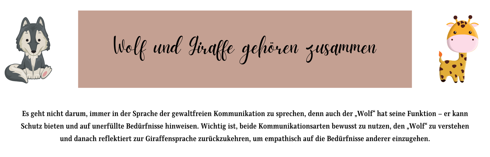
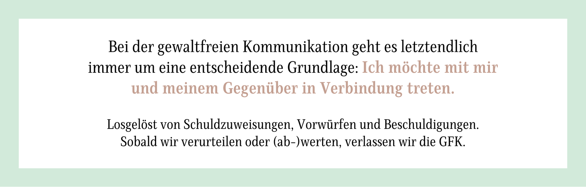

Kommunikation ist der Schlüssel zu einem harmonischen Miteinander – das gilt in der Kita genauso wie überall sonst im Leben. Doch zwischen „Hör auf damit!" und „Jetzt reicht's aber!" liegt eine Welt der gewaltfreien Kommunikation (GFK), die euch helfen kann, Konflikte gelassener zu meistern und Kinder in ihrer emotionalen Entwicklung zu unterstützen.
die GFK-Methode
GFK angewendet wird
bis zur konkreten Bitte
Was bedeutet gewaltfreie Kommunikation?
Die gewaltfreie Kommunikation (GFK) nach Marshall Rosenberg basiert auf vier Schlüsselkomponenten, die sich in jeder Situation anwenden lassen — im Konflikt zwischen zwei Kindern genauso wie im Elterngespräch:
Was passiert tatsächlich — ohne Bewertung?
Was empfinde ich gerade in dieser Situation?
Welches unerfüllte Bedürfnis steckt dahinter?
Was wünsche ich mir konkret von dir?
Diese Struktur hilft dabei, Gespräche auf eine klare, nicht verletzende Weise zu führen und gleichzeitig die Bedürfnisse aller Beteiligten zu berücksichtigen.
Wolf und Giraffe: Zwei Arten zu kommunizieren
Marshall B. Rosenberg, ein amerikanischer Psychologe, entwickelte den berühmten Vergleich zwischen „Wolfssprache" (bewertend, vorwurfsvoll) und „Giraffensprache" (empathisch, verbindend). Die Giraffe hat das größte Herz aller Landtiere — und sieht mit ihrem langen Hals über den Tellerrand. Genau das macht GFK aus.

Es geht nicht darum, immer in Giraffensprache zu sprechen — auch der „Wolf" hat seine Funktion und kann auf unerfüllte Bedürfnisse hinweisen. Wichtig ist, beide Arten bewusst zu nutzen und nach dem Wolf zur Giraffensprache zurückzukehren.
| Situation | 🐺 Wolfssprache | 🦒 Giraffensprache |
|---|---|---|
| Streit um Baustein | „Hört sofort auf zu streiten!" | „Ich sehe, ihr wollt beide den gleichen Baustein." |
| Kind räumt nicht auf | „Jetzt räumt endlich auf!" | „Ich verstehe, dass es schwer ist aufzuhören — wie wäre es mit einem Foto?" |
| Kind wirft Gegenstände | „Ben! Hör sofort auf damit!" | „Ich bin besorgt — kannst du die Bausteine in die Kiste legen?" |
| Grenzen setzen | „Das ist verboten, Schluss!" | „Mir ist wichtig, dass hier alle sicher sind. Das geht so nicht." |
| Elterngespräch | „Ihr Kind macht das nie mit!" | „Mir ist aufgefallen, dass… Wie erleben Sie das zu Hause?" |

Was GFK nicht ist – und typische Vorurteile
GFK wird oft missverstanden. Hier die häufigsten Irrtümer:
GFK bedeutet nicht, nie Nein zu sagen. Grenzen setzen ist ein wichtiger Teil der Kommunikation — und mit GFK setzt du sie klarer und wirksamer.
GFK heißt nicht, dass Kinder immer bekommen, was sie wollen. Es geht darum, Bedürfnisse ernst zu nehmen und Lösungen zu suchen, die für alle funktionieren.
GFK ist keine Manipulationstaktik. Es geht nicht darum, Kinder in eine Richtung zu steuern, sondern um echte Verbindung auf Augenhöhe.
GFK lässt Konflikte nicht verschwinden. Konflikte gehören zum Leben — mit GFK lassen sie sich respektvoller und nachhaltiger lösen.
3 Praxisbeispiele aus dem Kita-Alltag
Leo und Mia streiten um denselben Baustein, der Turm fliegt um. Eure erste Reaktion wäre vielleicht: „Hört auf zu streiten!" Aber wie klingt es mit GFK?
GFK-Ansatz:
„Ich sehe, dass ihr beide den gleichen Baustein haben wollt."
„Ihr seid gerade richtig verärgert, oder?"
„Ihr möchtet beide bauen und dabei eure eigenen Ideen umsetzen."
„Wie könntet ihr eine Lösung finden? Wollen wir abwechselnd oder eine neue Regel vereinbaren?"
Spielzeit ist vorbei, Emma und Paul haben keine Lust aufzuräumen. Statt einem frustrierten „Jetzt räumt endlich auf!":
GFK-Ansatz:
„Ich sehe, dass ihr noch mitten im Spiel seid."
„Ich kann verstehen, dass es schwer ist jetzt aufzuhören."
„Ihr möchtet euer Bauwerk nicht sofort abbauen."
„Wie wäre es, wenn ihr euer Bauwerk fotografiert, damit ihr morgen weiterbauen könnt? Danach räumen wir gemeinsam auf."
Ben hat gerade Bausteine durch den Raum gepfeffert — beinahe hätte er ein anderes Kind getroffen.
GFK-Ansatz:
„Ich sehe, dass du die Bausteine durch den Raum wirfst."
„Ich bin besorgt, weil ich möchte, dass hier alle sicher spielen können."
„Mir ist wichtig, dass wir aufeinander achten und niemandem weh tun."
„Kannst du die Bausteine in die Kiste legen und eine andere Möglichkeit finden, deine Energie rauszulassen?"
Warum ist GFK in der Kita so wichtig?
Gewaltfreie Kommunikation fördert nicht nur die sprachliche Entwicklung der Kinder, sondern stärkt auch ihr Selbstbewusstsein und die Fähigkeit zur Empathie. Statt sich in Machtkämpfe zu verstricken, lernen Kinder, ihre Gefühle und Bedürfnisse zu verstehen und auf eine respektvolle Weise auszudrücken.